이 강의가 만드는 AI 비서
강사는 메타코드에서 대기업·공공기관 대상 AI(Artificial Intelligence) 교육 과정을 설계하고 현장 운영을 돕는 일을 해요. 이 강의는 그 현장에서 얻은 업무 자동화 아이디어를 클로드로 직접 만들어 보는 라이브 특강이에요.
출발점은 흔한 불편이에요. 회의나 통화에서 나온 할 일을 캘린더에 적어 둬도, 누가 다시 알려 주지 않으면 그냥 지나가 버려요. 슬라이드도 이 질문으로 시작하고, 아래쪽 카드 네 장이 오늘 만들 결과물이에요. 등록된 캘린더 일정, 카카오톡 할 일 알림, 중요 일정 아티팩트 보고서, 금요일 진척 결과표 순서예요.
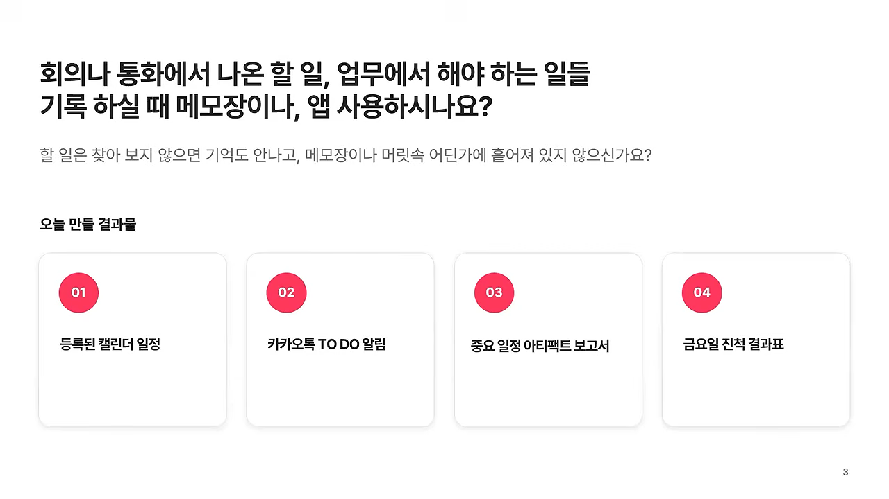
강사의 바람은 세 가지예요. 캘린더 앱에 들어가지 않고 클로드 화면에서 일정을 다 처리하고 싶고, 매일 아침 리마인드를 받고 싶고, 한 주를 마칠 때 무엇이 끝났고 무엇이 남았는지 한눈에 보고 싶다는 거예요.
네 단계를 한 장으로 모으면 아래 그림이 돼요. 가운데 구글 캘린더가 유일한 원본이에요. 1단계는 여기에 일정을 넣고 태그를 다는 일이고, 오른쪽 세 단계는 정해진 시각에 이 캘린더를 읽어서 각자 다른 결과물을 만들어요. 색은 이 문서 전체에서 단계를 가리켜요.
무료와 유료, 무엇이 다를까요
시작 전에 강사는 무료 플랜과 유료 플랜이 무엇이 다른지 짚어요. 표에서 분홍색으로 칠한 줄이 차이가 나는 기능이에요. 대화·웹 검색·파일 업로드, 아티팩트, 구글 캘린더 같은 기본 커넥터는 무료에서도 다 돼요. 커스텀 커넥터는 무료에서 '1개'로 묶여 있어요.
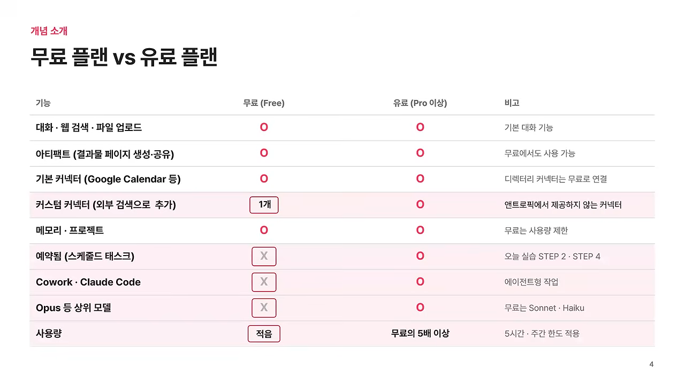
강사가 유료를 권하는 이유는 '예약됨'이라고 표시되는 스케줄드 태스크예요. 표의 비고 칸에도 '오늘 실습 STEP 2 · STEP 4'라고 적혀 있어요. 그 밖에 Cowork와 Claude Code, Opus 5.5 같은 상위 모델도 Pro 이상에서 쓸 수 있어요. 무료 플랜은 Sonnet과 Haiku까지예요.
사용량은 Pro가 무료의 다섯 배쯤이고, Max로 올리면 10배·20배까지 늘어난다고 해요. 표 비고에는 '5시간 · 주간 한도 적용'이라고 적혀 있어서, 짧은 구간 한도와 주간 한도가 따로 있다는 점도 보여 줘요.
커넥터·예약 작업·아티팩트, 그리고 프롬프트 4원칙
실습에 들어가기 전에 개념 세 개를 먼저 잡고 가요. 슬라이드의 카드 세 장이 각각 하나씩이에요.
- 커넥터는 구글 캘린더의 실제 데이터에 닿는 통로예요. 캘린더 앱을 열지 않아도 대화만으로 일정을 읽고 쓸 수 있어요.
- 스케줄드 태스크는 정해진 시각에 자동으로 반복 실행되는 작업이에요. 서버에서 돌기 때문에 내 PC(Personal Computer)가 꺼져 있어도 동작해요.
- 아티팩트는 결과물을 대화창과 분리된 별도 페이지로 저장하는 방식이에요. 핵심은 다른 사람에게 링크로 공유할 수 있다는 점이에요.
커넥터는 MCP로 움직여요
강사는 커넥터를 MCP 한 장으로 다시 설명해요. 슬라이드 오른쪽 그림에서 빨간 원이 클로드이고, 그 안의 MCP 배지에서 오른쪽 세 갈래, 즉 구글 캘린더, 카카오톡(PlayMCP), 그 밖의 외부 서비스로 이어져요. 클로드의 손에 도구를 하나씩 쥐여 주는 그림이라고 보면 돼요.
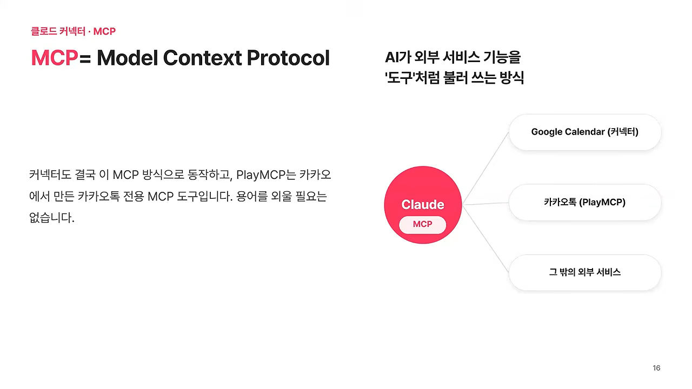
슬라이드 왼쪽 문장도 같은 말을 해요. 커넥터도 결국 MCP 방식으로 동작하고, PlayMCP는 '카카오에서 만든 카카오톡 전용 MCP 도구'라고 적혀 있어요. 강사는 용어를 외울 필요는 없다고 덧붙여요.
프롬프트 4원칙
현장에서 가장 많이 받는 질문은 '프롬프트를 어떻게 짜야 하느냐'래요. 강사가 정리한 답은 네 칸이에요. 목적 설계, 확인 항목 구조화, 제약조건 명시, 출력 형식 지정이에요.
다만 강사는 이 틀을 너무 무겁게 받아들이지 말라고 해요. 한때는 정해진 형식을 지키는 프롬프트 엔지니어링이 유행했지만, 지금은 내가 무엇을 원하는지만 분명하면 된다고 봐요. 일단 AI에게 던지고, 그다음 함께 맞춰 가면 충분하다는 거예요.
1단계: 대화로 캘린더에 일정 넣기
여기서부터 실습이에요. 강사는 클로드 데스크톱 앱을 띄우고, 가장 먼저 구글 캘린더 커넥터를 연결해요.
구글 캘린더 연결
- 채팅창의 + 버튼을 눌러 '커넥터'로 들어가요 — 커넥터 추가 → 커넥터 둘러보기 순서예요.
- '인기 커넥터'에서 Google Calendar의 + 버튼을 눌러요 연결 링크가 뜨고, 쓰는 구글 계정으로 로그인하면 체크 표시로 바뀌어요
아래 화면이 커넥터 둘러보기 창이에요. 왼쪽 줄 두 번째 Google Calendar 카드 오른쪽에 초록 체크가 붙어 있죠. 강사는 미리 연결해 둬서 이미 체크 상태예요. 연결하지 않은 카드는 오른쪽에 + 버튼이 보여요.
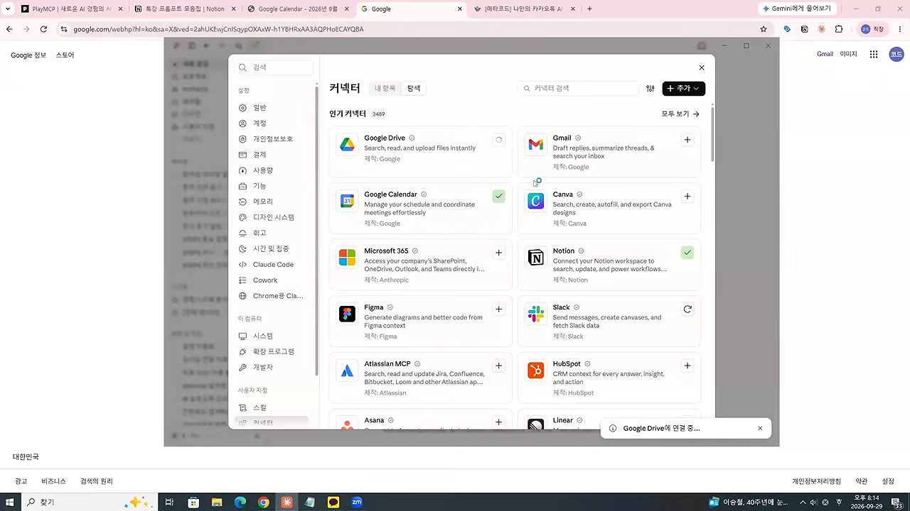
등록 규칙을 프롬프트로 고정하기
그냥 "일정 넣어 줘"만으로도 등록은 돼요. 하지만 강사는 처음에 규칙을 한 번 정해 둬요. 그래야 나중에 알림과 보고서에도 깔끔하게 담기기 때문이에요. 슬라이드는 프롬프트를 네 칸으로 나눠요. 왼쪽 위에는 등록할 일정, 오른쪽 위에는 앞으로 계속 지킬 제목 규칙이 있어요. 아래 두 칸은 등록 전에 확인할 것과 주의사항이에요.
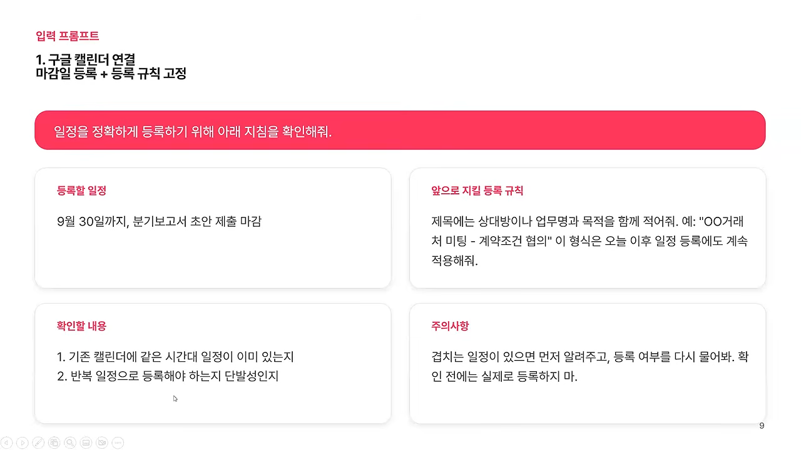
이 프롬프트는 강사가 노션 페이지에 정리해 두고 복사해 쓰게 했어요. 붙여 넣으면 클로드가 "앞으로는 이렇게 등록하겠다"고 답하고, 애매한 부분이 있으면 되물어요. 그 질문에 답만 해 주면 규칙이 적용돼요.
상태를 태그로 남기기
등록 규칙 다음은 상태 표시예요. 아래가 강사가 최종으로 쓰는 태그 지침이에요. [태그 규칙]의 네 줄이 핵심이에요. 공유하고 싶은 중요한 일정은 제목 맨 앞에 '(중요)'를 붙여요. 끝낸 일엔 '[완료]', 미룬 일엔 '[보류]'를 붙이고, 둘 다 없으면 '진행 중'으로 봐요.
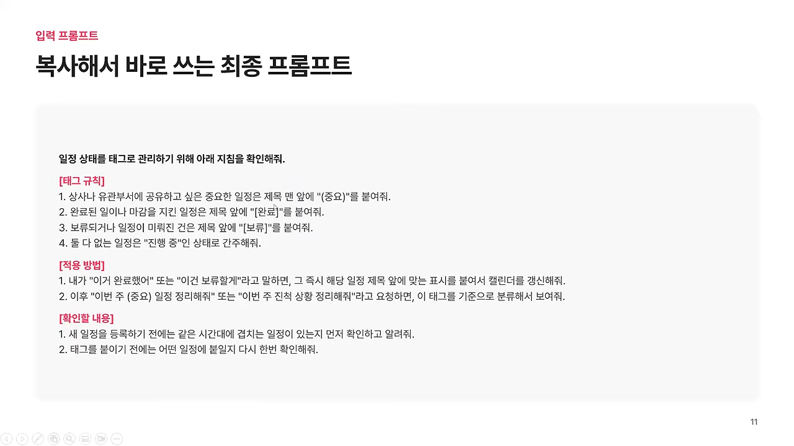
강사는 이 프롬프트를 직접 쓰지 않았다고 해요. 필요한 점을 클로드와 주고받으며 다듬었고, 최종본은 클로드가 써 줬대요. 태그 하나가 어떤 말로 붙고, 어느 단계가 그걸 읽는지는 아래 표로 정리할 수 있어요.
| 대화로 이렇게 말하면 | 캘린더 제목은 | 이 표시를 읽는 곳 |
|---|---|---|
| "이건 중요한 일정이야" | (중요) 외부 미팅 | 3단계 보고서가 대상으로 골라요 |
| "이거 완료했어" | … [완료] | 2단계 알림에서 빠지고, 4단계에서 완료로 세요 |
| "이건 보류할게" | … [보류] | 2단계 알림에는 남고, 4단계에서 보류로 세요 |
| 아무 말도 안 하면 | 표시 없음 | 4단계에서 진행 중으로 세요 |
2단계 알림이 [완료]는 빼고 [보류]는 남긴다는 규칙은 2단계에서 클로드가 정리한 답변 화면에 나와요.
실제로 등록해 보기
강사는 규칙이 다 들어간 상태에서 일정 하나를 넣어 봐요. 말로는 10월 1일이라고 했지만, 화면의 요청 문장은 '10월2일에 오후2시에 외부 미팅 일정 등록해줘. 이건 중요한 일정이야'예요. 클로드의 답을 보면 그날 일정을 먼저 훑은 게 보여요. 14~15시에 겹치는 일정이 없다고 한 뒤, 바로 이어지는 15시 일정과 맞물릴 수 있다는 점까지 짚어요.
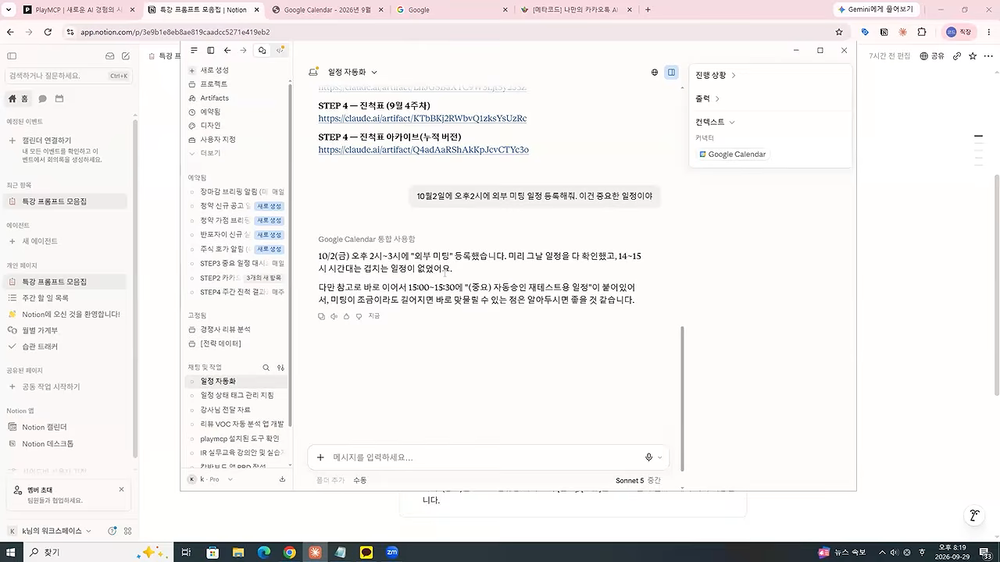
구글 캘린더를 열어 보면 10월 2일 칸에 빨간 점과 함께 '[중요] 외부 미팅'이 들어가 있어요. 팝업에는 오후 2:00~3:00, 설명 '외부 미팅 (중요 일정)', 30분 전 알림까지 잡혀 있어요. 9월 28일 칸의 '(중요) 특강 자료 최종 점검 [완료]'처럼 상태 표시가 붙은 일정도 보여요.
강사는 수강생에게도 일정을 하나 꼭 넣어 보라고 해요. 캘린더에 일정이 하나라도 있어야 2~4단계 결과물이 나오기 때문이에요.
완료는 어디에 저장될까요
여기서 질문이 하나 생겨요. 끝난 일정은 어떻게 '완료'로 표시할까요? 슬라이드의 답은 단순해요. 캘린더에는 '완료 여부'라는 상태가 없으니, 완료율이 저절로 계산되지는 않아요. 그래서 세 단계를 밟아요.
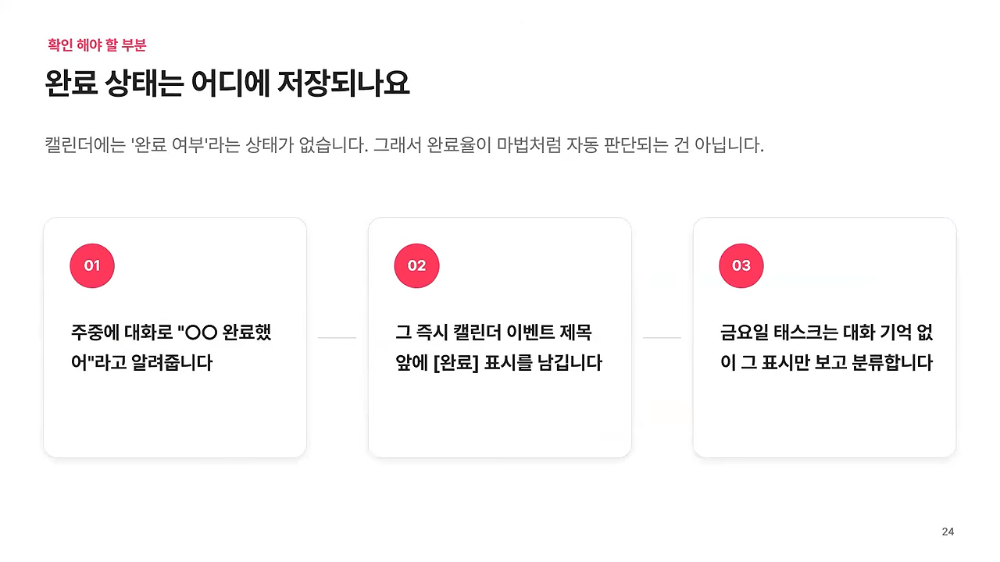
앞의 캘린더 화면을 다시 보면 확인이 왜 필요한지 보여요. 규칙은 '(중요)'인데, 방금 넣은 일정에는 대괄호 '[중요]'가 붙었어요. 3단계가 '(중요)'를 기준으로 일정을 고르니, 이런 차이는 등록 직후에 잡아 두는 게 좋아요.
등록이 제대로 됐는지는 직접 캘린더를 열어 봐도 되지만, 클로드에게 다시 확인시키는 편이 간단해요. 강사가 권하는 문장은 아래 슬라이드 그대로예요. 빠졌거나 틀린 곳이 있으면 클로드가 찾아서 알려 줘요.
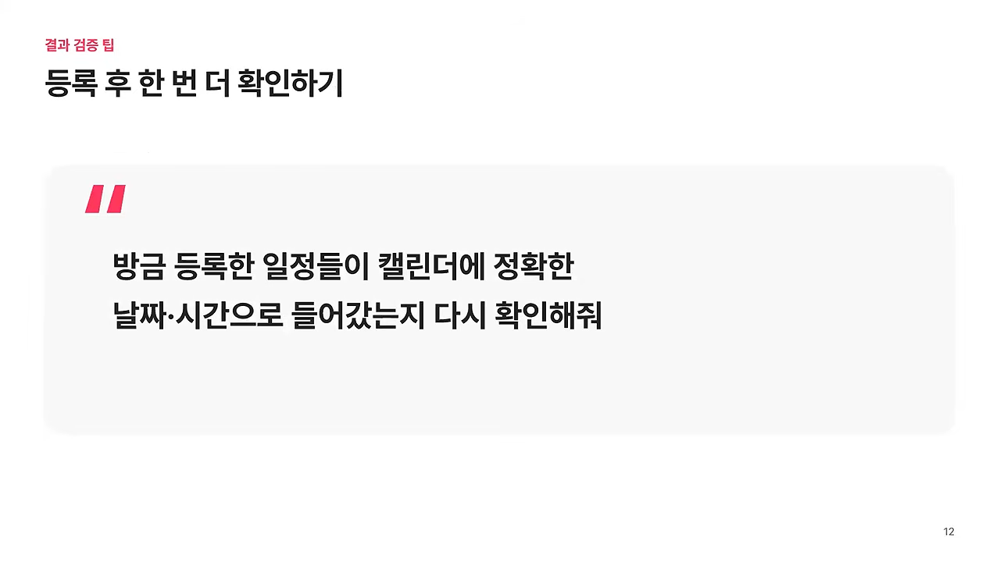
2단계: 매일 아침 카카오톡으로 할 일 받기
2단계는 매일 아침 그날 일정과 이번 주 마감을 카카오톡으로 받는 거예요. 먼저 원리부터 봐요. 슬라이드의 세 칸이 순서대로 일어나는 일이에요. 한 번 예약해 두면(매일 8시 실행), 클라우드 서버가 내 PC 대신 실행하고, 카카오톡이 PC 전원과 상관없이 도착해요.
PlayMCP에서 카카오톡 나챗방 담기
카카오톡과 클로드를 잇는 다리는 PlayMCP예요. 검색창에 PlayMCP를 치면 나오는 playmcp.kakao.com이에요. 강사는 카카오가 운영하는 곳으로, 개발자들이 MCP 도구를 올려 공유하고 무료로 배포하는 플랫폼이라고 소개해요. 처음엔 카카오 계정으로 회원 가입부터 해야 해요. 아이디와 비밀번호가 기억나지 않는 경우가 많아서 강사는 QR(Quick Response)코드 로그인을 추천해요.
로그인하면 첫 화면 추천 목록에 인기 도구가 떠요. 이번에 쓸 것은 왼쪽 아래 노란 'TALK' 아이콘의 '카카오톡 나챗방'이에요. 카드 설명에 적힌 대로 내 나챗방에 텍스트 메시지를 보내는 도구예요. 바로 옆에는 이후에 쓸 '한국 주식 정보'도 보여요.
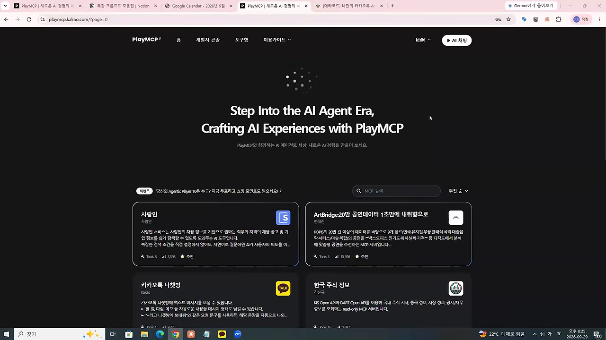
카드를 눌러 '도구함에 추가'를 누르고, 위쪽 메뉴의 도구함으로 가서 토글이 켜져 있는지 확인해요. 아래는 강사의 도구함이에요. 맨 위에 '추가한 MCP 5/10'이 보이고, 카카오톡 나챗방 말고도 맞춤 뉴스 브리핑, 아파트 정보, 한국 주식 정보, 부동산 청약 비서가 담겨 모두 파란 토글이 켜져 있어요.
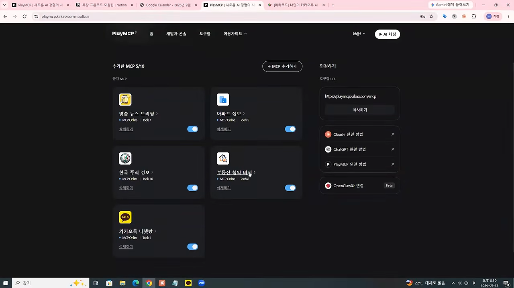
클로드에 PlayMCP 커넥터 연결
PlayMCP에 담기만 해서는 클로드가 쓸 수 없어요. 구글 캘린더 때처럼 클로드 쪽에서도 커넥터로 연결해야 해요. + 버튼 → 커넥터 추가 → 둘러보기에서 'PlayMCP'를 검색하면 카카오 로고가 박힌 커넥터가 맨 위에 떠요. 연결을 누르고, PlayMCP에 가입한 그 계정으로 로그인하면 끝이에요.
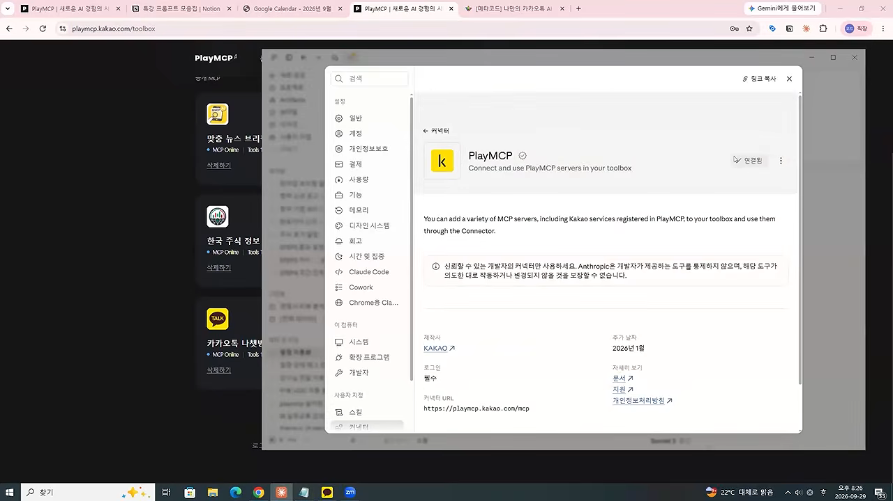
연결되면 채팅창의 + → 커넥터 목록에 PlayMCP가 켜진 채로 보여요. 이제 클로드 손에 구글 캘린더와 카카오톡 나챗방이 함께 쥐어진 거예요.
아침 8시 알림 프롬프트
마지막으로 예약 작업을 만드는 프롬프트를 넣어요. 강사 출근이 9시라 8시로 잡았어요. 칸은 네 개예요. [할 일]에 조회·정리·전송 세 동작을, '[TO DO LIST 양식]'에 메시지 모양을 적어요. [예외 처리]에는 일정이 없을 때를, [운영 조건]에는 매일 반복과 승인 없는 자동 실행을 적어요.
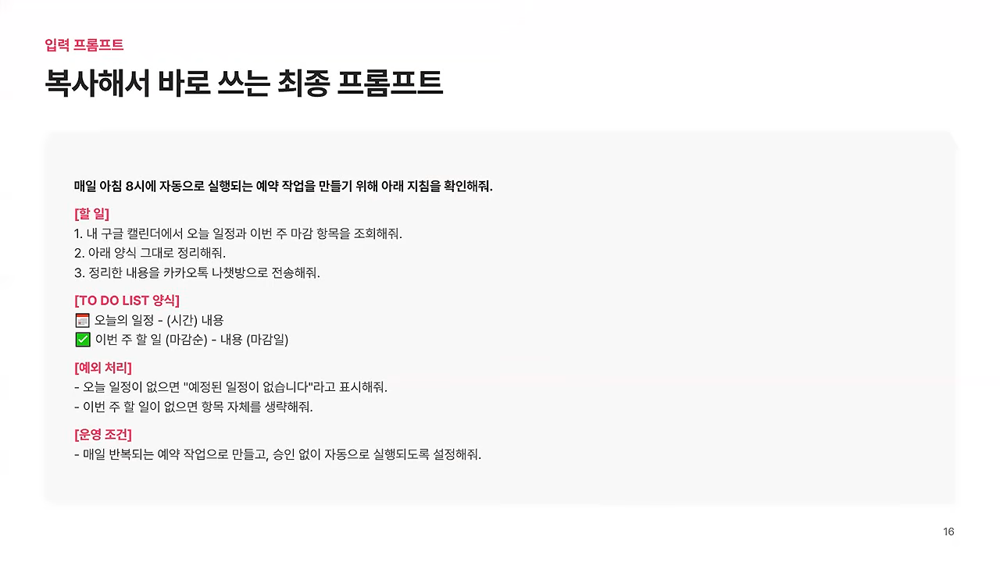
강사의 노션 프롬프트 모음집에도 같은 경고가 적혀 있어요.
예외 처리와 '자동 승인' 지시가 빠지면 매일 실행이 '승인 대기'로 멈출 수 있어 반드시 포함합니다.
— 영상 23:20 화면의 노션 메모
이번 주가 언제까지인지도 정해 둬요. 화면 속 프롬프트에는 "이번 주"를 오늘이 포함된 월~금으로 정의하는 [기준] 줄이 붙어 있어요. 직장인에게 주말은 이번 주가 아니라는 이유예요.
붙여 넣고 나면 클로드가 생각을 정리한 뒤 예약 작업을 만들어요. 아래 답변의 첫 문단이 흥미로워요. 카카오톡 메시지는 200자까지라서 넘치면 '외 N건'으로 줄이겠다고 스스로 덧붙였어요. 그 아래 '예약된 작업 생성됨: 아침 일정 브리핑 (매일 오전 8시)'와 반영한 지침 목록이 보여요.
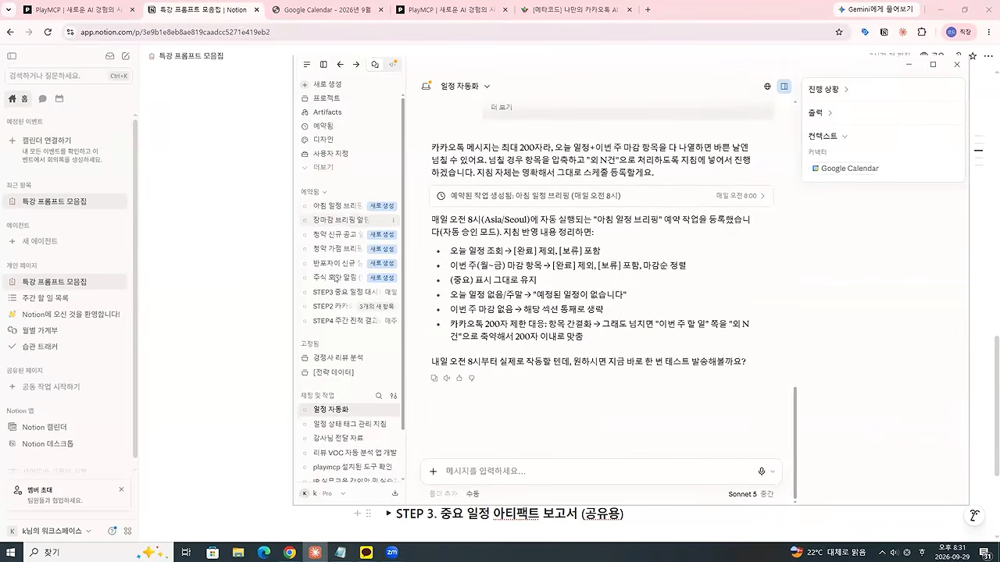
그리고 실제로 이런 메시지가 와요. 강사의 카카오톡 나챗방에 '2026년 9월 29일 화요일' 날짜 아래 두 덩어리가 도착해 있어요. 위는 그날 저녁 7시 유튜브 라이브 특강 일정이에요. 아래는 이번 주 할 일을 마감순으로 정리한 목록인데, 9/30 마감인 특강 후속 자료 정리와 [보류] 표시가 붙은 마케팅팀 특강 기획 협의가 보여요.
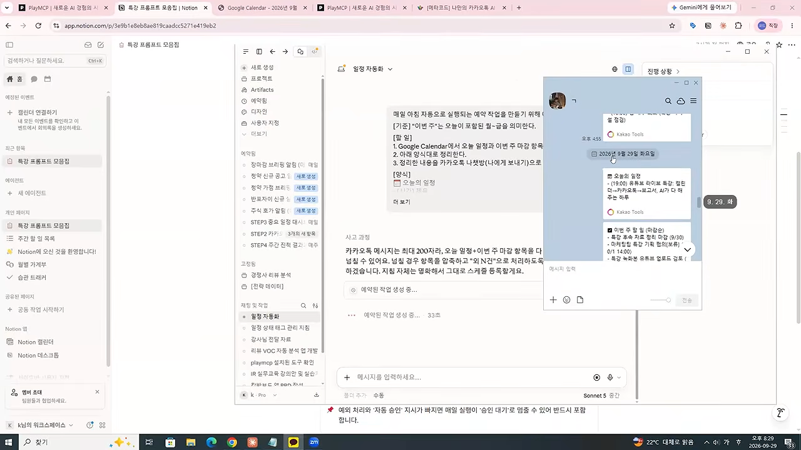
강사는 8시 10분쯤 이 알림을 받아 출근길에 우선순위를 정한대요. 예약 작업은 지정 시각보다 5~10분 늦게 실행될 수 있어요. 따라 하는 사람은 "테스트로 일정 등록한 거 나한테 한번 보내 줘"라고 해서 나챗방에 메시지가 오는지 바로 확인하면 돼요.
PlayMCP 도구 더하기: 주식·부동산 알림
카카오톡 알림을 한 번 연결해 두면 일정 말고도 쓸 데가 많아요. PlayMCP에는 도구가 아주 많고, 도구함에 추가만 하면 그 도구가 가져온 정보도 같은 나챗방으로 받을 수 있어요. 아래는 도구 목록의 한 페이지예요. 법령 검색(Korean-law-mcp), 미국 주식 정보('US Stock Info'), 공시 정보(OpenDART), KTX(Korea Train eXpress)·SRT(Super Rapid Train) 시간표, 나라장터 조달 정보 같은 카드가 보이고, 맨 아래 페이지 번호가 10까지 이어져요.
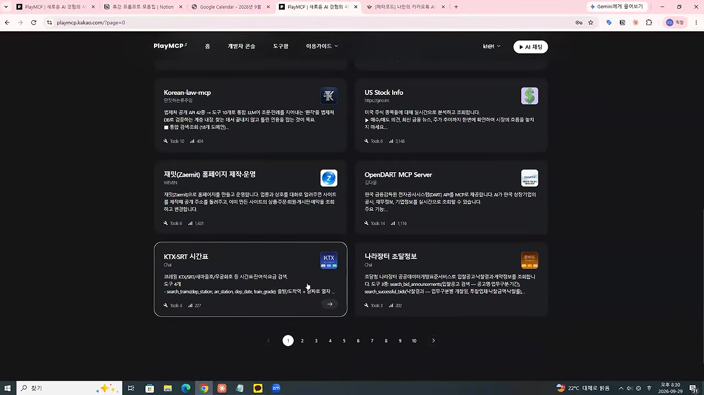
강사가 걸어 둔 주식·부동산 알림
강사는 아파트 정보, 부동산 청약 비서, 한국 주식 정보를 도구함에 넣고, 2단계와 같은 방식으로 프롬프트를 짜서 예약 작업을 걸어 뒀어요. 노션에 정리한 프롬프트를 보면 칸 구성이 2단계와 거의 같아요. [목적], [대상 데이터], [구성], [예외 처리], [운영 조건] 순서예요.
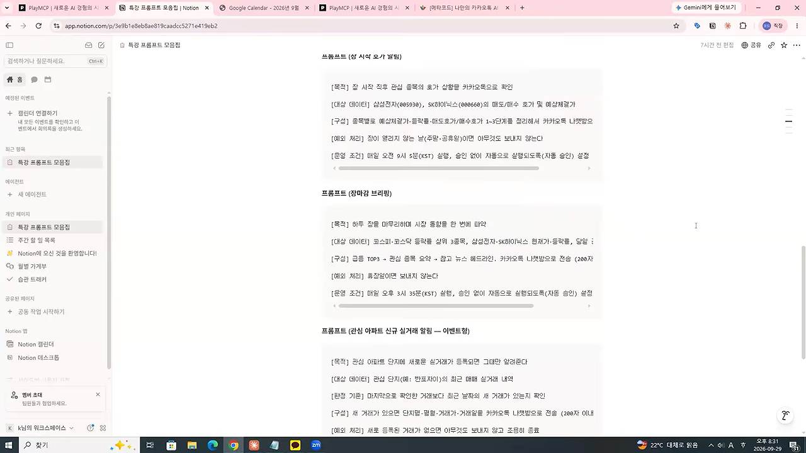
- 장 시작 호가 알림: 대상 데이터가 '삼성전자(005930), SK하이닉스(000660)'로 적혀 있어요. 두 종목의 매도·매수 호가와 예상체결가를 매일 오전 9시 5분에 보내요. 장이 열리지 않는 주말·공휴일엔 아무것도 보내지 않아요.
- 장마감 브리핑: 코스피·코스닥 등락률 상위 3종목, 관심 종목의 현재가·등락률·거래량을 모아요. 매일 오후 3시 35분에 200자 안으로 보내고, 휴장일엔 쉬어요.
- 관심 아파트 실거래 알림: 관심 단지(예: 반포자이)의 실거래가를 지켜보다가, 새 매매 거래가 올라오면 단지명·평형·거래가·거래일을 보내요. 새 거래가 없으면 아무것도 보내지 않고 조용히 끝나요.
이렇게 만든 작업은 클로드의 '예약됨' 목록에 하나씩 쌓여요. 아래는 그중 '청약 가점 브리핑 (매일 오전 8시30분)' 작업의 상세 화면이에요. 위쪽에 활성 토글과 '다음 실행: 내일 오전 8:30'이 있고, 오른쪽에 저장된 지침이 있어요. 맨 아래 권한은 '자동 승인'이에요.
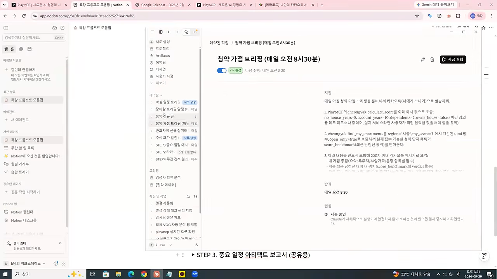
실제로 온 메시지
강사가 테스트로 보내 달라고 한 메시지들이에요. 그래서 앞에 '[테스트①]' 같은 꼬리표가 붙어 있어요. 가운데 메시지가 9시 5분 장 시작 호가 알림이에요. 삼성전자 예상체결 266,000원과 매도 274,500·매수 274,000, 하이닉스 예상체결 1,755,000원이 찍혀 있어요. 그 아래로 15시 35분 장마감 브리핑이 이어져요.
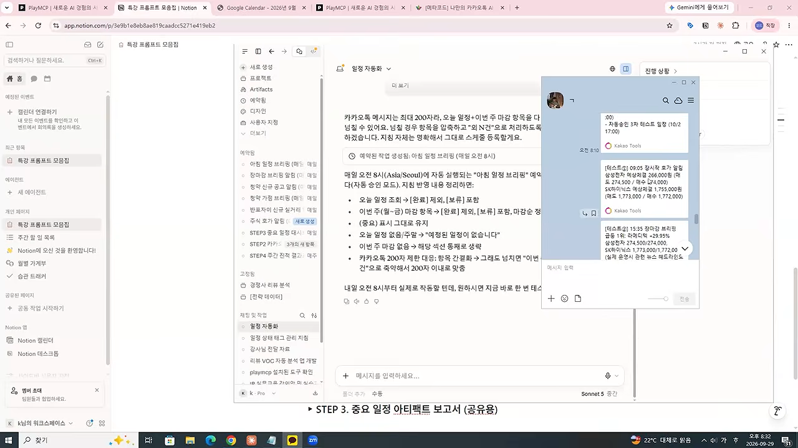
아파트 알림은 이렇게 와요. 반포자이의 최근 거래가 '2026.7.31 · 25.7평(84.94㎡) · 52억원 · 5층'으로 찍혀 있고, 앞으로는 새 거래가 등록될 때만 알림이 온다고 덧붙여요. 강사는 25.7평이 52억 원에 거래됐다는 데 놀라요. 그 아래 메시지는 맞춤 뉴스 브리핑 도구로 받은 'AI 트렌드 브리핑' 테스트예요.
하루 동안 돌아가는 예약 작업
영상 화면에 시각이 나온 예약 작업을 한 줄에 놓으면 아래와 같아요. 오전 8시부터 9시 5분 사이에 다섯 개가 몰려 있고, 오후엔 장마감 브리핑 하나예요. 금요일에는 오후 5시에 4단계 진척표가 하나 더 돌아요.
강사가 이 대목에서 꼭 가져가라고 한 포인트는 하나예요. 아침·저녁 같은 정해진 시각이든, 특정 날짜든, 새 거래 같은 특정 이벤트든, 조건만 정해 주면 원하는 정보를 카카오톡으로 받을 수 있다는 거예요.
3단계: 중요 일정을 아티팩트 보고서로
3단계의 구분은 슬라이드 한 줄로 요약돼요. 카카오톡 알림은 나 혼자 보는 용도, 아티팩트는 공유하는 용도예요. 1단계에서 '(중요)'를 붙여 둔 일정만 모아, 상사나 유관부서, 팀원에게 보낼 대시보드 페이지를 만들어요.
대시보드 프롬프트
프롬프트 칸이 2단계보다 늘었어요. 맨 위 문장이 '공유용 대시보드 웹페이지(아티팩트)'를 만든다고 못 박아요. [대상 데이터]는 '(중요)' 태그가 붙은 이번 주 일정이고, [구성]은 상단 요약 아래 미팅·마감일·기타 세 섹션이에요. 그다음 [정렬], [스타일], [업데이트 방식], [예외 처리]가 이어져요.
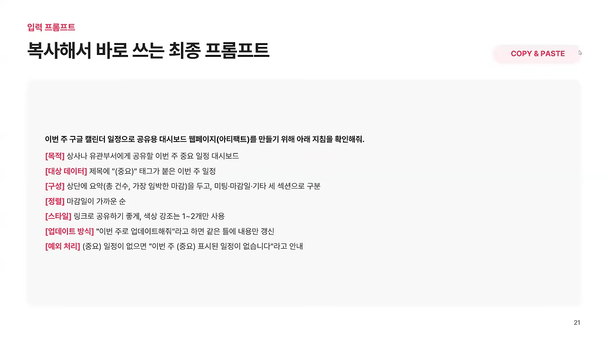
만들어진 '이번 주 중요 일정' 페이지
결과물 맨 위에 요약 카드 세 장이 있어요. 이번 주 (중요) 일정 8건, 가장 임박한 마감 D-2, 외부·협업 미팅 3건이에요. 그 아래 '미팅 7건'과 '마감일 2건' 목록이 마감일 순으로 이어지고, 오른쪽 끝에 D-1·오늘·보류·예정·완료 같은 상태 표시가 붙어요. 프롬프트의 [구성]과 [정렬]이 그대로 모양이 된 거예요.
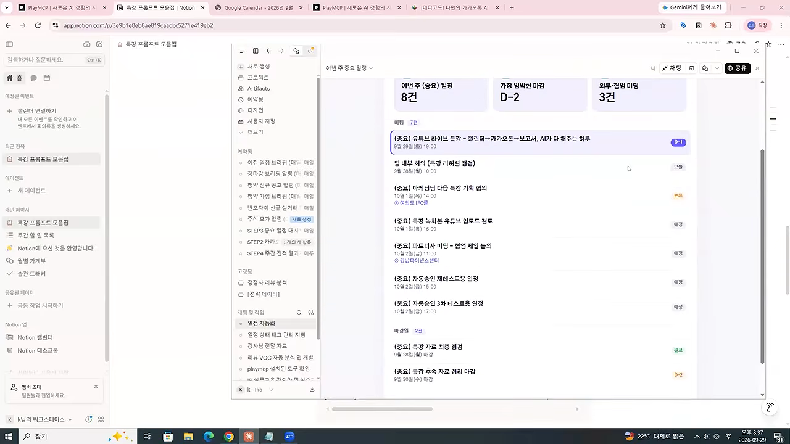
강사의 화면은 하루 전에 만든 거라 오늘 특강이 아직 D-1로 보여요. 이런 어긋남을 막는 게 갱신 작업이에요. 이 프롬프트를 넣으면 클로드가 매일 갱신하는 예약 작업을 만들겠다며 승인을 요청해요. 승인하면 아래처럼 '이번 주 중요 일정 대시보드 갱신 (매일 오전 9시)' 작업이 생겨요. 지침에는 이미 만든 대시보드의 아티팩트 주소가 적혀 있어요. 매일 이 페이지를 다시 확인하고, 바뀐 게 있을 때만 갱신하라는 내용이에요.
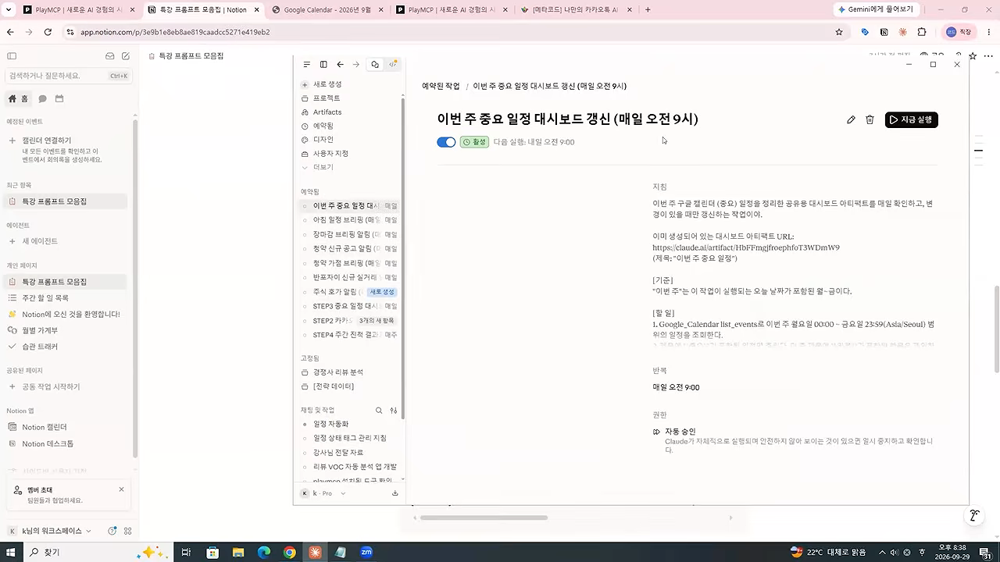
강사의 실무 활용: 강사님께 보내는 교육 요청서
강사는 일정 관리 말고도 아티팩트를 자주 써요. 교육 회사라 외부 강사와 주고받을 내용이 많은데, 고객사 요청을 텍스트로만 정리해 보내면 쓰기도 번거롭고 읽기도 불편하대요. 그래서 요청 내용을 한 페이지로 만들어 링크로 보내요.
아래 예시 페이지 맨 위에는 '강의용 예시라 실제 고객사명·강사명·연락처를 가렸다'는 안내가 있어요. 제목은 '○○기업 10/28(수) 클로드 활용 교육 — 강의 개요 확정 및 진행방식 문의'예요. 그 아래 기업, 3시간, 일시, 장소, 오프라인 30명 같은 핵심 정보가 칩으로 한 줄에 정리돼 있어요. 강의명·일자·장소·형식을 표로 보여 준 뒤, 커리큘럼과 강사에게 받을 회신 항목으로 이어져요.
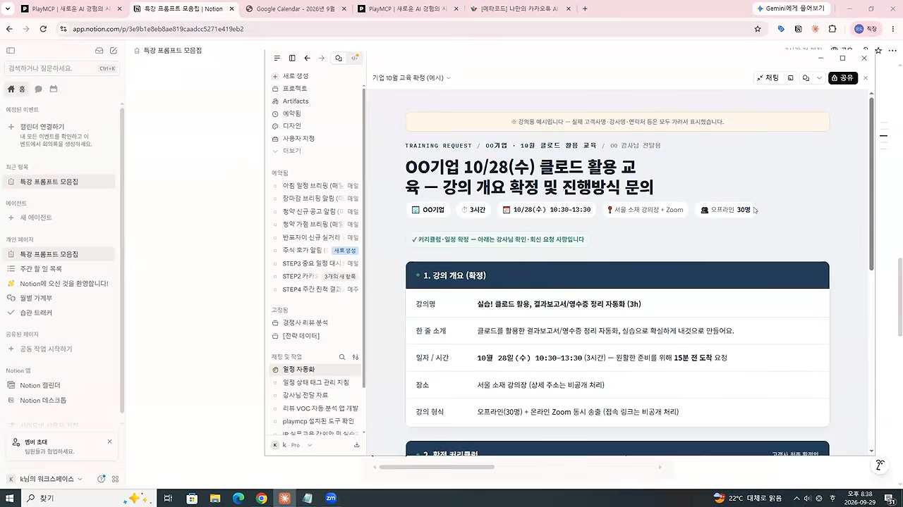
4단계: 금요일 오후 진척표
마지막 단계는 한 주를 닫는 일이에요. 금요일 오후 5시쯤, 캘린더를 열지 않아도 이번 주에 무엇을 끝냈고 무엇이 미뤄졌는지 진척표로 받아요. 일정을 꾸준히 넣어 왔다면 이 표가 그대로 주간 업무 보고가 돼요.
주중엔 짧게 던지기만 해요
진척표가 맞으려면 주중에 '[완료]' 표시가 제때 붙어야 해요. 슬라이드 위쪽 빨간 칸이 그 말투예요. "분기보고서 초안 제출 완료했어. 캘린더에서 그 일정 제목 앞에 [완료]라고 표시해주고, 이번 주 진척 결과표에도 반영해줘." 아래 두 칸은 프롬프트를 언제 길게, 언제 짧게 쓸지 비교해요.
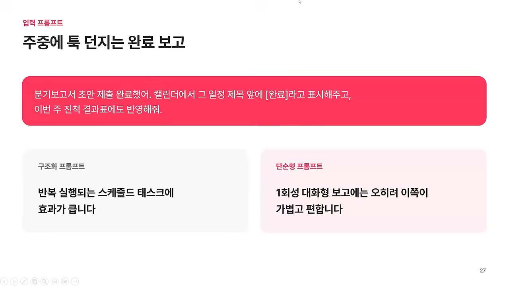
강사는 노션 모음집에 있는 '고도화' 프롬프트도 같은 맥락이라고 설명해요. 처음엔 간단한 개요만 짜서 넣었고, 클로드와 "이건 더하고 이건 빼자"를 주고받으며 다듬었대요. 완성본도 결국 클로드가 써 줬어요.
금요일 진척표 프롬프트
예약 작업용 프롬프트는 칸이 일곱 개예요. 그중 [판정 기준]이 이 단계의 전부라고 해도 돼요. 제목에 [완료]가 있으면 완료, [보류]면 보류, 둘 다 없으면 진행 중이에요. 오른쪽 예시 화면은 그 결과를 보여 줘요. 이번 주 등록 항목 5건 중 완료 1건, 보류 1건이라 전체 완료율이 20%예요.
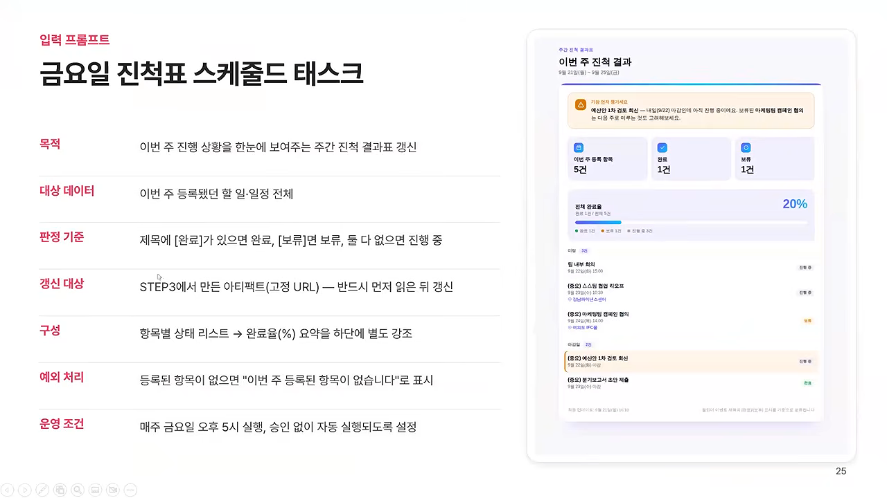
이 프롬프트를 붙여 넣으면 3단계처럼 예약 승인을 요청하고, 승인하면 '예약됨'에 금요일 작업이 생겨요.
결과: 9월 4주차 진척표
강사가 미리 만들어 둔 결과예요. 위에 완료 1건, 보류 1건, 진행 중 4건 카드가 있어요. 주황 경고 칸은 내일(9월 30일)이 마감인데 아직 진행 중인 '특강 후속 자료 정리'를 짚어요. 아래 항목별 상태 목록 끝에 전체 완료율 17%가 보여요. 6건 중 1건이 끝났으니 17%예요.
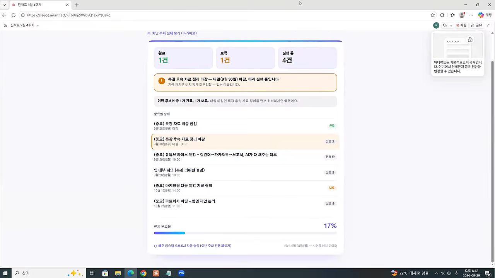
강사는 주차마다 기록이 쌓이기를 바랐어요. 그래서 '진척표 아카이브'라는 누적 페이지도 따로 만들게 했어요. 매주 금요일 오후 5시에 그 주 진척표가 새 페이지로 저장되고, 아카이브 맨 위에 링크가 한 줄씩 붙어요. 지금은 '2026년 9월 4주차 (9/28 ~ 10/2) · 17% · 진행 중' 한 줄뿐이에요.
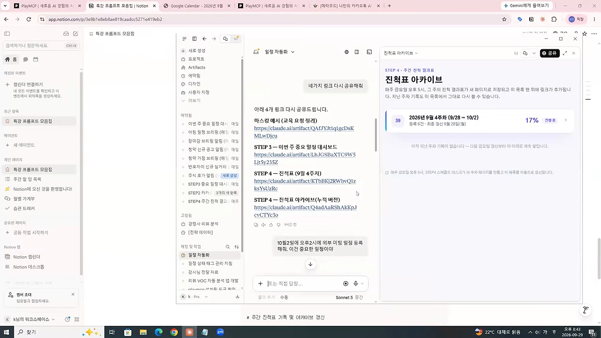
직접 판정해 보기
판정 기준은 단순하지만, 결과를 직접 바꿔 보면 감이 더 빨리 와요. 아래 목록은 영상 속 9월 4주차 일정 여섯 개예요. 각 줄을 누르면 제목 끝의 표시가 '없음 → [완료] → [보류]' 순서로 바뀌고, 오른쪽 진척표가 영상의 판정 기준대로 다시 계산돼요.
이번 주 6건 중 완료 1건, 보류 1건
전체 완료율 17%
- 처음 상태 그대로 완료율이 17%인지 보세요. 영상 화면과 같은 6건 중 1건이에요.
- '마케팅팀 다음 특강 기획 협의'의 [보류]를 지워 진행 중으로 바꿔 보세요. 완료율은 그대로예요. 보류도 분모에 들어가니까요.
- '특강 후속 자료 정리 마감'에 [완료]를 붙여 보세요. 주중에 "완료했어" 한마디를 던졌을 때 금요일 표가 어떻게 바뀌는지 보여 줘요.
강사는 이 진척표를 자기 한 주를 돌아보고 다음 주 최우선 업무를 정하는 용도로 설계했어요. 팀 구글 캘린더 계정을 연결할 수 있다면, 팀이 이번 주에 한 일을 보는 팀 단위 대시보드로도 키울 수 있대요.
네 단계를 하나의 흐름으로
네 단계를 따로 보면 각각 작은 기능이에요. 강사는 이걸 하나의 흐름으로 이어 볼 때 업무 자동화가 완성된다고 말해요. 마무리 슬라이드가 그 흐름을 한 줄로 보여 줘요. 위쪽 띠가 단계 이름이고, 아래 카드 네 장을 이어 읽으면 한 문장이 돼요. '대화로 일정을 등록하면', '매일 아침 카카오톡으로 TO DO를 받고', '중요한 건 아티팩트 보고서로 정리되고', '금요일엔 한 주의 진척이 결과표가 됩니다'.
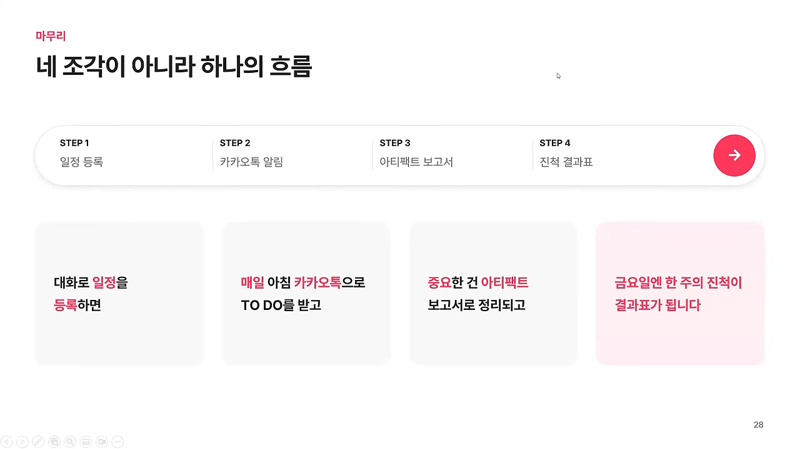
강사는 많은 사람이 업무 자동화를 너무 어렵게 생각한다고 봐요. 이렇게 작은 흐름을 하나씩 엮어 워크플로를 만들면 누구나 할 수 있고, 실습으로 충분히 익힐 수 있다는 거예요.
프롬프트를 한데 모아 보면
강사는 목적, 넣을 데이터, 판정 방법, 갱신 기준, 구성 같은 항목을 한 줄씩 던졌을 뿐이라고 말해요. 실제로 영상에 나온 프롬프트를 칸 이름만 모아 보면 뼈대가 거의 같아요.
| 프롬프트 | 화면에 적힌 칸 |
|---|---|
| 1단계 등록 규칙 | 등록할 일정 · 앞으로 지킬 등록 규칙 · 확인할 내용 · 주의사항 |
| 1단계 태그 지침 | 태그 규칙 · 적용 방법 · 확인할 내용 |
| 2단계 아침 알림 | 할 일 · 'TO DO LIST 양식' · 예외 처리 · 운영 조건 |
| 장 시작 호가 알림 | 목적 · 대상 데이터 · 구성 · 예외 처리 · 운영 조건 |
| 3단계 중요 일정 대시보드 | 목적 · 대상 데이터 · 구성 · 정렬 · 스타일 · 업데이트 방식 · 예외 처리 |
| 4단계 금요일 진척표 | 목적 · 대상 데이터 · 판정 기준 · 갱신 대상 · 구성 · 예외 처리 · 운영 조건 |
정해진 시각에 혼자 도는 프롬프트(2단계 이후)에는 빠짐없이 '예외 처리'가 들어 있어요. 사람이 옆에 없을 때 일정이 없거나 장이 쉬는 날을 어떻게 할지 미리 정해 둬야 하기 때문이에요. 처음부터 예약 작업으로 만드는 2단계, 4단계, 주식 알림에는 '운영 조건'에 승인 없는 자동 실행도 적혀 있어요.
확장 아이디어 다섯 가지
강사가 강조하는 건 이 흐름을 그대로 쓰는 것보다 넓혀 보는 거예요. 슬라이드에 다섯 가지를 적어 뒀어요.
- 개인 일정으로: 개인 구글 계정을 연결하면 약속·병원 예약·경조사까지 같은 알림을 받을 수 있어요. 강사는 갤럭시의 삼성 캘린더에서 구글 계정을 연결해 두면 휴대폰에서 넣은 일정도 구글 캘린더에 함께 들어간다고 설명해요.
- 더 많은 PlayMCP 도구로: 앞에서 본 주식·부동산 알림처럼 도구만 바꿔 끼우면 돼요.
- 팀 단위로: 팀 공유 캘린더를 연결하면 4단계 진척표가 팀 대시보드가 돼요.
- 스킬로: 1단계의 등록 규칙을 스킬로 만들어 두면, 새 대화를 열어도 프롬프트를 다시 붙여 넣지 않아도 돼요.
- Claude Code로: 이미 클로드를 잘 쓰는 사람이라면 아티팩트 대신 데이터베이스가 붙은 웹페이지 대시보드를 만들어 기록을 쌓을 수 있어요.
강사는 클로드를 레고에 빗대며 마무리해요.
그걸로 뭐 집을 만들 수도 있고 뭐 자동차를 만들 수도 있고 여러 가지 동물을 만들 수도 있습니다. 근데 결국에는 그걸 가지고 놀지 않으면 아무것도 만들 수 없는 거거든요.
— 영상 39:36